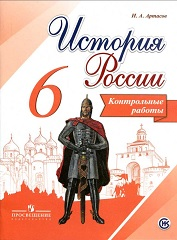

Пособие является составной частью учебно-методического комплекса по истории России для 6 класса и предназначено для проверки результатов обучения по курсу истории 6 класса в соответствии с требованиями Федерального государственного образовательного стандарта основного общего образования и Историко-культурного стандарта. В пособие включены проверочные работы в форме тестовых заданий, аналогичные заданиям ОГЭ и работы в форме вопросов.
Глава I. Народы и государства на территории нашей страны в древности
Глава II. Русь в IX - первой половине XII в.
Глава III. Русь в середине XII — начале XIII в.
Глава IV. Русские земли в середине XIII—XIV в.